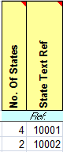
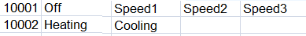
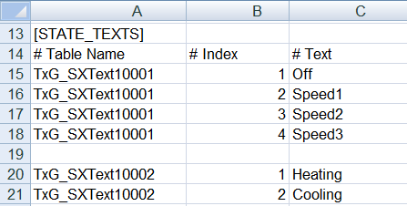

Defining General Information |
From SX Open file | To OPC file | Comments |
- Delete supervisor (orange) lines 6 to 14.
- Delete the SERVER_STATE State lines.
- Delete each of the array lines 2 through x. Only an individual entry may exist on array data points.
| | Only Individual arrays are supported in Desigo CC. Existing alarms in tab BSTR_Hash are not supported. Desigo CC can map related OPC datapoint information (for example, Value, Limit High) onto a single BACnet datapoint. |
- Select the OPC Server tab.
- Highlight cell 7B [OPC Server Name].
- Right-click and select Copy.
| - Select section [SERVERS].
- Select column C [Prog ID].
- Right-click and select Paste.
- In column A [Name], enter a description (spaces not permitted).
- In the B [Description] column, enter a description, for example:
| In the event a value is entered in the SX Open file, in column C [Computer Name], it must be prefixed by a forward slash (/) in the Prog ID, for example:
Computer_Name/OPC_Server_Name |
- Select the BACnet Device tab.
- Delete supervisor information (orange) lines 6 to x.
- Highlight as of line 8, column D [Description].
- Right-click and select Copy.
| - Select section [GROUPS].
- Select column B [Name].
- Right-click and select Paste.
- In the column C [Description], enter a description for each entry.
- In column A [Parent Server Name], enter the same description as section [SERVERS], column A [Name].
| The information in column B [Name] must match section [ITEMS], column A [Parent Group Name]. |
Creating Data Points |
From SX Open file | To OPC file | Comments |
- Select column L (Keyname).
- Highlight all data points.
- Right-click and select Copy.
| - Select section [ITEMS].
- Select column B [Name].
- Right-click and select Paste.
- Replace all special characters not supported in Desigo CC with an underscore ( _).
Example
Building1'CabinetQ1'MtrEg1'CurrPh1
Building1_CabinetQ1_MtrEg1_State | Data points with a high or low limit must be unique. Supplement the information with a suffix _PrVal, _LoLim, and _HiLim to ensure uniqueness. |
- Select column N (Description).
- Highlight all data points.
- Right-click and select Copy.
| - Select section [ITEMS].
- Select column C (Description).
- Right-click and select Paste.
- Replace all special characters not supported in Desigo CC with an space.
Example
Building1'CabinetQ1'MtrEg1'CurrPh1
Building1 CabinetQ1 MtrEg1 State | |
- Select column A [Item Name].
- Highlight all data points.
- Right-click and select Copy.
| - Select section [ITEMS].
- Select column D [Item Name].
- Right-click and select Paste.
| |
No steps. | - Select section [GROUPS].
- Select column B [Name].
- Highlight the entry and copy the information to the section [ITEMS], column A [Parent Group Name].
| Enter the same description on all data points for the same device. |
Configuring data points |
From SX Open file | To OPC file | Comments |
- Information from columns J (BACnet Object Type)+ P (Destination).
| - Select section [ITEMS].
- Select column F [Direction].
- Enter information (I, O or IO) for each data point.
| Define the input and output: BACnet = I OPC = IO Two way = IO |
- Information from columns J (BACnet Object Type)+ C (OPC Data Type).
| - Select section [ITEMS].
- Select column E [Data Type].
- Enter information for each data point.
| Data type is based on the import rules for library Global_OPC_HQ_1. |
- Select an analog data point.
- Information from column T (Min Present Value).
| - Select section [ITEMS].
- Select column O [Min].
- Enter information for each analog data point.
| |
- Select an analog data point.
- Information from column U (Max Present Value).
| - Select section [ITEMS].
- Select column P [Max].
- Enter information for each analog data point.
| |
- Select an analog data point.
- Information from column X (Resolution).
| - Select section [ITEMS].
- Select column U [Resolution].
- Enter information for each analog data point, for example: 0.1.
| |
Defining Units and Texts |
From SX Open file | To OPC file | Comments |
- Select an analog data point.
- Information from column S (BACnet Unit).
| - Select section [ITEMS].
- Select column V [Eng Unit].
- Enter information for each analog data point, for example: 48.
| You must enter a number as the unit, for example: 48 = kW. |
- Select a binary data point.
- Information from columns AA (Polarity) + AB (Active Text) + AC (Inactive Text).
| - Select section [ITEMS].
- Select column W [State Text].
- Enter the Path, for example: Heating$Cooling.
| Enter only states that are not standard OPC texts. A separator must be added between the states. |
- Select a multistate data point.
- Information from columns AG (No. Of States) + AH (State Text Ref).
| - Select section [STATE_TEXTS].
- Select column A [Table Name].
- Enter the text group, for example, TxG_SXText10001.
Number, index and texts are defined in the State tab. - Select column B [Index].
- Enter the index number.
- Select column C [Text].
- Enter the associated index text.
| Example Configuration tab:  Example State tab:  Example result:  The text groups must be manually created in the system. |
Defining Alarm Response |
From SX Open file | To OPC file | Comments |
- Column AQ = 0.
- Information from column AK (High Limit).
AK = 100 - Information from column AL (LowLimit).
AL = -100
| - Select section [ITEMS]
- Select column Z [Alarm Value].
- Enter information for the data point.
Z = 100$-100
| Multiple alarms must be separated by $. Example:
For column X, the results are the following,
HighPriorityAlarm$HighPriorityAlarm |
- Column AQ = 0.
- Multistate information from column AM (Alarm Value(s)).
AM = 2,3,4 - Information from column An (Fault Value)).
AM = 5,6
| - Select section [ITEMS].
- Select column Z [Alarm Value].
- Enter information for the data point.
Z = 2$3$4$5$6
| Example:
For column X, the result would be
MediumPriorityAlarm_NoAckNoReset$MediumPriorityAlarm_NoAckNoReset$MediumPriorityAlarm_NoAckNoReset$Fault_NoAckNoReset$Fault_NoAckNoReset |
- Column AQ = 0.
- Information from column AO (Notification Class).
AO = 31
| - Select section [ITEMS].
- Select column X [Alarm Class].
- Enter information for the data point.
X = HighPriorityAlarm$LowPriorityAlarm
| The number of entries in the Alarm class (Syntax, see Notification Class) must match the number of entries in the column Alarm Value. Alarm types:
Simple = Alarm_NoAckNoReset
Basic = Alarm_NoReset
Alarm = Alarm |
- No steps.
| - Select section [ITEMS].
- Select column Y [AlarmType] for example: GE$LE
| The number of entries in the Alarm class and Normal Text) must match the number of entries in the column Alarm Value. Alarm type operators
GE = Value greater than
LE = Value less than
EQ = Value equal to |
- Column AQ = 0.
- Information from column AP (Message Text), for example: No communication is available.
| - Select section [ITEMS].
- Select column AA [Event Text], for example: No communication is available.
- Select column AB [Normal Text], for example: Communication is available.
| The number of entries in the Alarm class and Normal Text) must match the number of entries in the column Alarm Value. NOTE: SX Open could only support one text. |
Creating Data Point Hierarchy |
From SX Open file | To OPC file | Comments |
- Select column L (Keyname).
- Highlight all data points.
- Right-click and select Copy.
| - Select section [ITEMS].
- Select column AE [Logical Hierarchy].
- Right-click and select Paste.
- Select column AF [User Hierarchy].
- Right-click and select Paste.
- Replace all ' (apostrophes) with _ (underscore).
Example
Building1'CabinetQ1'MtrEg1'CurrPh1
Building1_CabinetQ1_MtrEg1_State | Hierarchies are only possible is the information in column L is structured hierarchically. |